8.1 Overview
Agentic systems fail in ways that are invisible without instrumentation: a planner that quietly produces worse plans after a model update, a sub-agent that loops five times before giving up, a tool that returns injected instructions, a cost that doubles because a prompt lost its cache prefix. Layer 8 makes every run reconstructible and every quality dimension measurable. The diagram lists five blocks: logging, tracing, metrics and monitoring, evaluation, and dashboards and alerts.
Two goals: operate the system (is it up, fast, within budget?) and improve it (is it correct, safe, useful, and getting better?). Traditional observability covers the first; evaluation covers the second.
8.2 Architecture

Mermaid source diagrams/observability-flow.mmd
flowchart LR
subgraph SRC["Instrumented services"]
API[API]
RT[Agent runtime]
GW[LLM gateway]
TL[Tool executor]
end
SRC -->|OTLP| COL[OpenTelemetry Collector]
COL --> TR[Traces<br/>Tempo / Jaeger / LangSmith / Phoenix]
COL --> MT[Metrics<br/>Prometheus]
COL --> LG[Logs<br/>Loki / Elasticsearch]
TR --> EV[Evaluation pipeline<br/>offline + online evals]
EV --> DS[(Datasets & annotations)]
MT --> DB[Grafana dashboards]
MT --> AL[Alertmanager<br/>SLO burn-rate alerts]
LG --> AUD[(Audit log store<br/>WORM)]
DS --> HF[Human feedback UI]
8.2.1 Logging
Structured JSON logs from every service with correlation IDs (trace_id, run_id, session_id, tenant_id).
- Requests: endpoint, principal, channel, validation result, guardrail verdicts.
- Responses: status, length, latency, final guardrail verdicts, delivery channel.
- Errors: exceptions with stack traces, provider errors, tool failures, budget exhaustion.
- Audit logs: security-relevant events (auth decisions, tool permission decisions, approvals, data access) written to an append-only, tamper-evident store (WORM object storage, a dedicated audit table with hash chaining) with long retention. Audit logs are a governance artefact (Layer 9) and must never contain secrets; PII is masked according to classification.
Prompt and completion content logging is a policy decision: full content for debugging in non-production, hashed or sampled with masking in production, full content only with tenant consent and encryption.
8.2.2 Tracing
A run is a tree of spans: run → plan → task → agent step → model call / tool call → guardrail check. OpenTelemetry is the substrate: instrument the orchestrator, executor, gateway and guardrails with spans carrying the GenAI semantic conventions (gen_ai.system, gen_ai.request.model, gen_ai.usage.input_tokens, gen_ai.usage.output_tokens, tool name, arguments hash, result size).
- Request traces: the whole run, end to end, including queue wait time.
- Agent steps: each thought/action/observation with the prompt version and model.
- Tool calls: name, latency, status, retries, breaker state.
- Latency: broken down by model, tool, guardrail and queueing so slowness is attributable.
| Tool | Type | Strengths |
|---|---|---|
| OpenTelemetry | Standard + SDKs + Collector | Vendor-neutral; one pipeline for traces, metrics, logs; GenAI semantic conventions |
| LangSmith | LLM observability + evaluation platform | Deep LangGraph integration, datasets, annotation queues, prompt hub |
| Arize Phoenix | Open-source LLM tracing and evals | OTel-native, runs locally or self-hosted, evaluation templates |
| Langfuse | Open-source LLM observability | Self-hostable, prompt management, scores, cost tracking |
| Grafana Tempo / Jaeger | Distributed tracing backends | General-purpose, integrates with Grafana |
| Datadog / Honeycomb / New Relic | Commercial APM with LLM features | Unified infra + LLM monitoring |
8.2.3 Metrics and monitoring
Emit as Prometheus metrics or OTel metrics with labels (tenant, agent, model, tool, task_class):
- Token usage: input, output, cached tokens per model.
- Throughput: runs started/completed per minute, steps per run, tool calls per run.
- Cost tracking: cost per run, per tenant, per agent, per model; budget consumption.
- Success rate: runs completed vs failed vs cancelled vs budget-exhausted; task acceptance rate from reflection; tool success rate.
- Latency: p50/p95/p99 for run, first token, model call, tool call, guardrail; queue wait.
- User feedback: thumbs up/down, edit rate, escalation rate.
Define SLOs: for example, 95 % of interactive runs return first token within 3 s; 99 % of runs finish within 5 minutes; cost per run under a target; guardrail block rate within a band. Alert on burn rate, not on single thresholds.
8.2.4 Evaluation
Evaluation answers whether the system is good, not just up.
Offline evaluation. A curated dataset of inputs with expected outputs or rubrics, run against the full pipeline (or individual components) on every change. Includes golden answers, tool-call expectations (did the agent call the right tool with the right arguments?), plan quality rubrics, RAG metrics and safety test cases. Runs in CI; regressions block promotion.
Online evaluation. Sampled production runs scored by LLM judges (faithfulness, relevance, tone), by heuristics (loops, budget exhaustion, refusal rate) and by user feedback. Trends feed dashboards; low scores feed annotation queues.
A/B and shadow tests. Route a fraction of traffic to a new prompt or model (A/B) or run the candidate in parallel without serving its output (shadow) and compare scores, latency and cost.
Human feedback. Explicit ratings, corrections, approvals and rejections from Layer 12 become labelled data; annotation queues let reviewers score sampled runs against rubrics.
Regression testing. Fixed suites for safety (jailbreak corpus), tool contracts (schema compatibility) and end-to-end scenarios, run against every prompt, model, tool or guardrail change.
| Metric | Measures | Method |
|---|---|---|
| Faithfulness (RAGAS) | Whether the answer's claims are supported by retrieved context | LLM judge decomposes claims and checks each |
| Answer relevance (RAGAS) | Whether the answer addresses the question | Judge generates questions from the answer, compares embeddings |
| Context precision / recall (RAGAS) | Retrieval quality | Compare retrieved chunks to ground truth |
| Hallucination rate | Share of answers with unsupported claims | Judge or NLI; complements faithfulness |
| Task success rate | Whether the objective was achieved | Rubric per scenario; human or judge |
| Tool-call accuracy | Right tool, right arguments | Exact/semantic match against expectations |
| Plan quality | Completeness, minimality, correct dependencies | Rubric-scored |
| Safety pass rate | Share of adversarial prompts correctly handled | Adversarial suite |
| Cost and latency per task | Efficiency | From telemetry |
Frameworks: RAGAS, DeepEval, LangSmith evaluators, Phoenix evals, promptfoo, OpenAI Evals, Inspect. LLM judges must themselves be evaluated against human labels on a sample; use a different model from the one being judged.
8.2.5 Dashboards and alerts
- Real-time dashboards: run volume, success/failure, latency percentiles, tokens and cost by tenant and model, guardrail verdicts, tool health, queue depth, GPU utilisation for self-hosted models.
- Quality dashboards: evaluation scores over time by prompt version and model version, feedback trends, annotation throughput.
- Alerts and notifications: provider error spikes, failover activation, cost anomaly (> 2× baseline), loop rate increase, guardrail block rate change, SLO burn rate, evaluation regression after deploy.
- SLO/SLA monitoring: error budgets per tenant tier; reports to stakeholders.
8.3 Implementation guide
- Instrument with OpenTelemetry from the first commit; add LLM-specific attributes; export to an OTel Collector that fans out to tracing, metrics and logs backends.
- Propagate context across the queue: inject trace context into the job payload and extract it in the worker.
- Record prompt and model versions on every span; without them, quality regressions cannot be attributed.
- Keep evaluation datasets in version control (or a dataset registry) with provenance; grow them from production failures.
- Build the annotation queue early; human labels are the scarce resource.
- Separate operational telemetry retention (weeks) from audit retention (years).
8.4 Example implementation
OpenTelemetry instrumentation of a model call:
from opentelemetry import trace
tracer = trace.get_tracer("agent-runtime")
async def traced_complete(gateway, **kw):
with tracer.start_as_current_span("gen_ai.chat") as span:
span.set_attribute("gen_ai.request.model_class", kw["task_class"])
span.set_attribute("agent.prompt_version", kw.pop("prompt_version", "n/a"))
resp = await gateway.complete(**kw)
span.set_attribute("gen_ai.response.model", resp["model"])
span.set_attribute("gen_ai.usage.input_tokens", resp["usage"]["prompt_tokens"])
span.set_attribute("gen_ai.usage.output_tokens", resp["usage"]["completion_tokens"])
span.set_attribute("gen_ai.cost_usd", resp["cost_usd"])
return resp
Prometheus metric definitions:
RUN_DURATION = Histogram("agent_run_duration_seconds", "Run duration", ["tenant", "status"],
buckets=(1, 5, 15, 30, 60, 120, 300, 600))
TOKENS = Counter("llm_tokens_total", "Tokens", ["tenant", "model", "direction"])
COST = Counter("llm_cost_usd_total", "Cost", ["tenant", "model"])
TOOL_CALLS = Counter("tool_calls_total", "Tool calls", ["tool", "status"])
GUARDRAIL = Counter("guardrail_verdicts_total", "Verdicts", ["pipeline", "check", "action"])
RAGAS offline evaluation:
from ragas import evaluate
from ragas.metrics import faithfulness, answer_relevancy, context_precision, context_recall
result = evaluate(dataset, metrics=[faithfulness, answer_relevancy, context_precision, context_recall])
assert result["faithfulness"] >= 0.85, "faithfulness regression - blocking promotion"
Alert rule (Prometheus):
- alert: AgentCostAnomaly
expr: sum(rate(llm_cost_usd_total[1h])) > 2 * sum(rate(llm_cost_usd_total[1h] offset 1d))
for: 30m
labels: { severity: warning }
8.5 Best practices
- Common mistakes. Logging prompts with secrets; traces without prompt/model versions; metrics without tenant labels; evaluation only at launch; LLM judges never validated against humans; alerting on averages.
- Optimisation. Sample traces at 100 % for failures and a fraction for successes; aggregate token metrics at the gateway; pre-compute cost per run at run end.
- Security. Mask PII in telemetry; restrict access to trace content; audit log to WORM storage; retention aligned with governance policy.